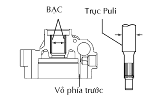
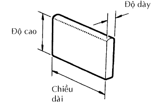
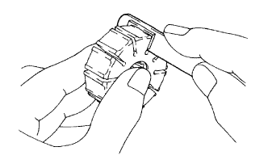
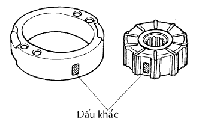
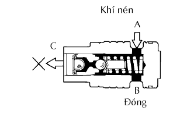

BƠM TRỢ LỰC > KIỂM TRA |
| 1. KIỂM TRA TRỤC BƠM TRỢ LỰC VÀ BẠC Ở VỎ PHÍA TRƯỚC BƠM |
|  |
Dùng một Panme và thước cặp, đo khe hở dầu.
| 2. KIỂM TRA RÔTO BƠM TRỢ LỰC VÀ CÁC CÁNH BƠM |
|  |
Dùng một Panme, đo chiều cao, độ dày và chiều dài của cánh bơm.
| Hạng mục | Điều kiện tiêu chuẩn |
| Chiều cao | 7.6 mm (0.299 in.) |
| Độ dày | 1.405 mm (0.0553 in.) |
| Chiều dài | 11.993 mm (0.4722 in.) |
|   |
Dùng thước lá, đo khe hở giữ rãnh rôto và cánh bơm.
| Dấu rôto và vành cam | Mã số cánh bơm | Chiều dài cánh bơm |
| Không | 44345-06110 | 12.001 đến 12.003 mm (0.47248 đến 0.47256 in.) |
| 1 | 44345-06120 | 11.999 đến 12.000 mm (0.47240 đến 0.47244 in.) |
| 2 | 44345-06130 | 11.997 đến 11.998 mm (0.47232 đến 0.47236 in.) |
| 3 | 44345-06140 | 11.995 đến 11.996 mm (0.47224 đến 0.47228 in.) |
| 4 | 44345-06150 | 11.993 đến 11.994 mm (0.47216 đến 0.47220 in.) |
| 3. KIỂM TRA VAN ĐIỀU KHIỂN LƯU LƯỢNG |
|  |
Bôi dầu trợ lực lên van và kiểm tra rằng nó rơi vào lỗ van xuống dưới bằng chính trọng lượng của nó một cách êm dịu.
Bịt một trong hai lỗ A hoặc B và cấp áp xuất khí nén 392 đến 490 kPa (4 đến 5 kgf/cm2, 57 đến 71 psi) vào phía đối diện. Xác nhận rằng khi không thổi ra từ lỗ C. Nếu khí thổi ra từ lỗ C, hãy thay thế cụm bơm trợ lực.
| 4. KIỂM TRA LÒ XO NÉN CỦA VAN ĐIỀU KHIỂN LƯU LƯỢNG |
Dùng một thước kẹp, đo chiều dài tự do của lò xo.
| 5. KIỂM TRA CÚT NỐI CỔNG CAO ÁP |
Nếu đế của cút nối ở cổng cao áp bị hư hỏng nặng, nó sẽ là nguyên nhân gây rò dầu. Nếu hư hỏng, hãy thay thế cụm bơm trợ lực lái.